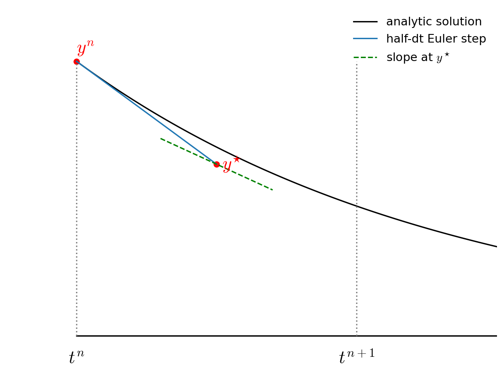
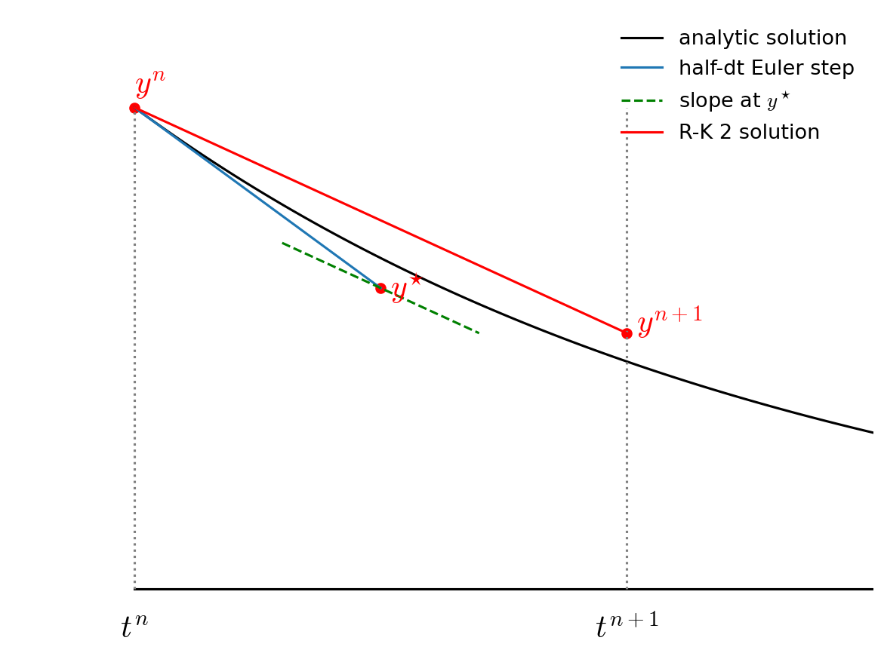
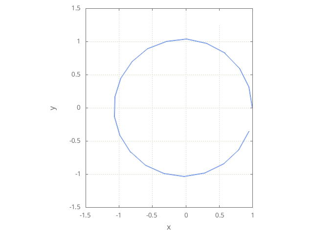

2nd-order Runge-Kutta Orbit#
The main utility of functions is that we can reuse them in a code. Let’s look at this by extending our Euler integration of an orbit to do 2nd-order Runge-Kutta integration.
The Euler method was based on a first-order difference approximation to the derivative. But a centered-difference approximation to \(df/dt\) is second order accurate at the midpoint in time, so we can try to update our system in the form:
Then the updates are:
This is locally third-order accurate (but globally second-order accurate), but we don’t know how to compute the state at the half-time.
To find the \(n+1/2\) state, we first use Euler’s method to predict the state at the midpoint in time. We then use this provisional state to evaluate the accelerations at the midpoint and use those to update the state fully through \(\tau\).
The two step process appears as:
then we use this for the full update:
Graphically this looks like the following:
First we take a half step and we evaluate the slope at the midpoint:
{kind=link}

Fig. 8 The predictor part of RK2 integration.#
{kind=link}

Fig. 9 The corrector / final update of RK2 integration.#
Notice how the final step (the red line) is parallel to the slope we computed at \(t^{n+1/2}\). Also note that the solution at \(t^{n+1}\) is much closer to the analytic solution than in the figure from Euler’s method.
This method is called 2nd-order Runge-Kutta.
Implementation#
To implement this, it would be nice to have a function that updates the state based on the derivatives, like:
OrbitState update_state(const OrbitState& state, const double dt,
const OrbitState& state_derivs);
This way we can easily do the update both times as needed via a simple function call.
Tip
Later we’ll learn how to use operator overloading to do something like:
OrbitState state{};
double dt{};
OrbitState state_derivs{};
...
auto state_new = state + dt * state_derivs;
Our implementation looks largely the same as the first-order method:
#include <iostream>
#include <iomanip>
#include <vector>
#include <cmath>
#include <numbers>
#include <format>
// G * Mass in AU, year, solar mass units
const double GM = 4.0 * std::numbers::pi * std::numbers::pi;
struct OrbitState {
double t;
double x;
double y;
double vx;
double vy;
};
OrbitState rhs(const OrbitState& state) {
OrbitState dodt{};
// dx/dt = vx; dy/dt = vy
dodt.x = state.vx;
dodt.y = state.vy;
// d(vx)/dt = - GMx/r**3; d(vy)/dt = - GMy/r**3
double r = std::sqrt(state.x * state.x + state.y * state.y);
dodt.vx = - GM * state.x / std::pow(r, 3);
dodt.vy = - GM * state.y / std::pow(r, 3);
return dodt;
}
OrbitState update_state(const OrbitState& state,
const double dt,
const OrbitState& state_derivs) {
OrbitState state_new{};
state_new.t = state.t + dt;
state_new.x = state.x + dt * state_derivs.x;
state_new.y = state.y + dt * state_derivs.y;
state_new.vx = state.vx + dt * state_derivs.vx;
state_new.vy = state.vy + dt * state_derivs.vy;
return state_new;
}
void write_history(const std::vector<OrbitState>& history) {
for (const auto& o : history) {
std::cout
<< std::format("{:11.8f} {:11.8f} {:11.8f} {:11.8f} {:11.8f}\n",
o.t, o.x, o.y, o.vx, o.vy);
}
}
std::vector<OrbitState> integrate(const double a,
const double tmax,
const double dt_in) {
// how the history of the orbit
std::vector<OrbitState> orbit_history{};
// set initial conditions
OrbitState state{};
// assume circular orbit on the x-axis, counter-clockwise orbit
state.t = 0.0;
state.x = a;
state.y = 0.0;
state.vx = 0.0;
state.vy = std::sqrt(GM / a);
orbit_history.push_back(state);
double dt = dt_in;
// integration loop
while (state.t < tmax) {
// if the final dt step takes us past our stopping time
// (tmax), cut the timestep
if (state.t + dt > tmax) {
dt = tmax - state.t;
}
// get the derivatives
auto state_derivs = rhs(state);
// get the derivatives at the midpoint in time
auto state_star = update_state(state, 0.5 * dt, state_derivs);
state_derivs = rhs(state_star);
// update the state
state = update_state(state, dt, state_derivs);
orbit_history.push_back(state);
}
return orbit_history;
}
int main() {
double tmax = 1.0;
double dt = 0.05;
double a = 1.0; // 1 AU
auto orbit_history = integrate(a, tmax, dt);
write_history(orbit_history);
}
The main difference is that we compute an intermediate solution at the half-time:
// get the derivatives at the midpoint in time
auto state_star = update_state(state, 0.5 * dt, state_derivs);
state_derivs = rhs(state_star);
This makes the final update time-centered, and gives us second-order accuracy.
When run with dt = 0.05, we get:
{kind=link}

We see that this is far better than the first-order Euler method. It is still not perfect, but as we cut the timestep, the solution should improve much faster than the Euler case.
Error estimate#
We can estimate the error by computing the initial distance from the Sun and comparing to the final distance from the Sun. The orbit is circular, so it should be constant.
try it…
Let’s write an error function of the form:
double error(const std::vector<OrbitState>& history)
that computes this error, and the output the error at the end of integration for a variety of timestep sizes.